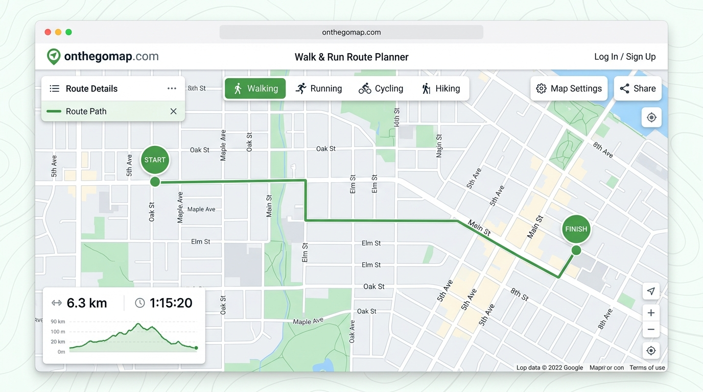
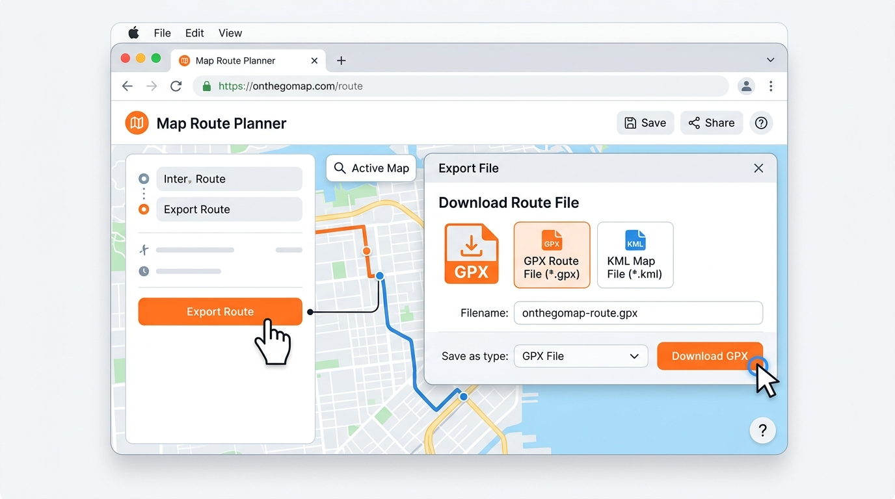

1
建立步行路徑 & 下載路線檔
🔧 工具：OnTheGoMap- 開啟 onthegomap.com/#/create
- 左上角選擇 步行模式（Walking）🚶，確認圖標呈選中狀態
- 點擊地圖設定起點，沿著預定健行路線逐步點擊新增路點，系統會自動沿道路規劃路徑
- 完成路徑後，確認左下角顯示的 總距離（如
6.3 km）與 預估時間 - 點擊 「Export Route」 或 「Save」 按鈕
- 選擇檔案格式 GPX（或 KML），點擊下載
- 確認下載完成：
onthegomap-6.3-km-route.gpx

▲ 在 OnTheGoMap 上選擇步行模式，沿路線逐步點擊建立路徑

▲ 匯出路線檔案，選擇 GPX 格式下載
小技巧：按住拖曳可微調已建立的路點位置，雙擊路線可插入新的中繼點。
注意：建議同時下載 GPX 和 KML 兩種格式，GPX 適用於登山 APP，KML 適用於 Google Maps。